Primary functions
A list of primary functions in this package can be found at the package website: https://indrajeetpatil.github.io/statsExpressions/reference/index.html
Following are few examples of how these functions can be used.
Example: Expressions for one-way ANOVAs
Between-subjects design
Let’s say we want to check differences in weight of the vehicle based on number of cylinders in the engine and wish to carry out Welch’s ANOVA:
# setup set.seed(123) library(ggplot2) library(statsExpressions) # create a boxplot ggplot(iris, aes(x = Species, y = Sepal.Length)) + geom_boxplot() + labs( title = "Fisher's one-way ANOVA", subtitle = expr_anova_parametric(iris, Species, Sepal.Length, var.equal = TRUE) )
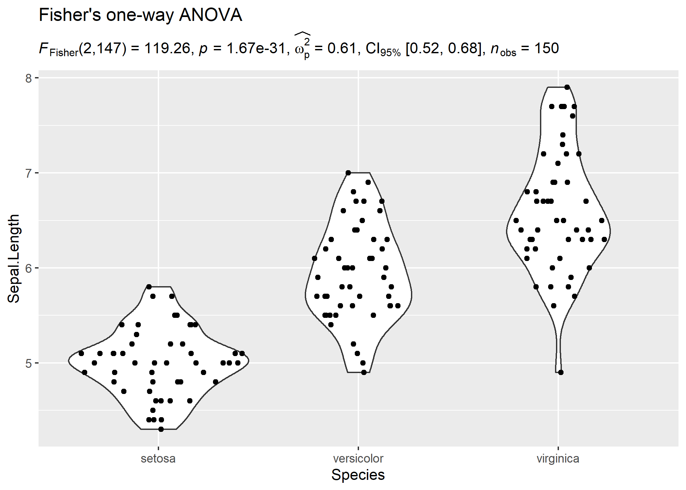
In case you change your mind and now want to carry out a robust ANOVA instead. Also, let’s use a different kind of a visualization:
# setup set.seed(123) library(ggplot2) library(statsExpressions) library(ggridges) # create a ridgeplot ggplot(iris, aes(x = Sepal.Length, y = Species)) + geom_density_ridges( jittered_points = TRUE, quantile_lines = TRUE, scale = 0.9, vline_size = 1, vline_color = "red", position = position_raincloud(adjust_vlines = TRUE) ) + labs( title = "A heteroscedastic one-way ANOVA for trimmed means", subtitle = expr_anova_robust(iris, Species, Sepal.Length, messages = FALSE) )
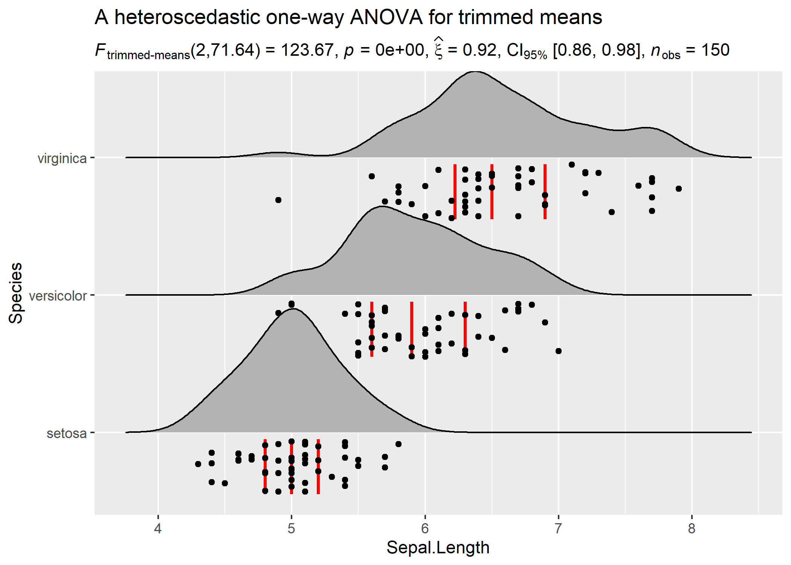
Needless to say, you can also use these functions to display results in ggplot-extension packages. For example, ggpubr:
set.seed(123) library(ggpubr) library(ggplot2) # plot ggboxplot( ToothGrowth, x = "dose", y = "len", color = "dose", palette = c("#00AFBB", "#E7B800", "#FC4E07"), add = "jitter", shape = "dose" ) + # adding results from stats analysis using `statsExpressions` labs( title = "Kruskall-Wallis test", subtitle = expr_anova_nonparametric(ToothGrowth, dose, len, type = "np") ) #> Note: 95% CI for effect size estimate was computed with 100 bootstrap samples.
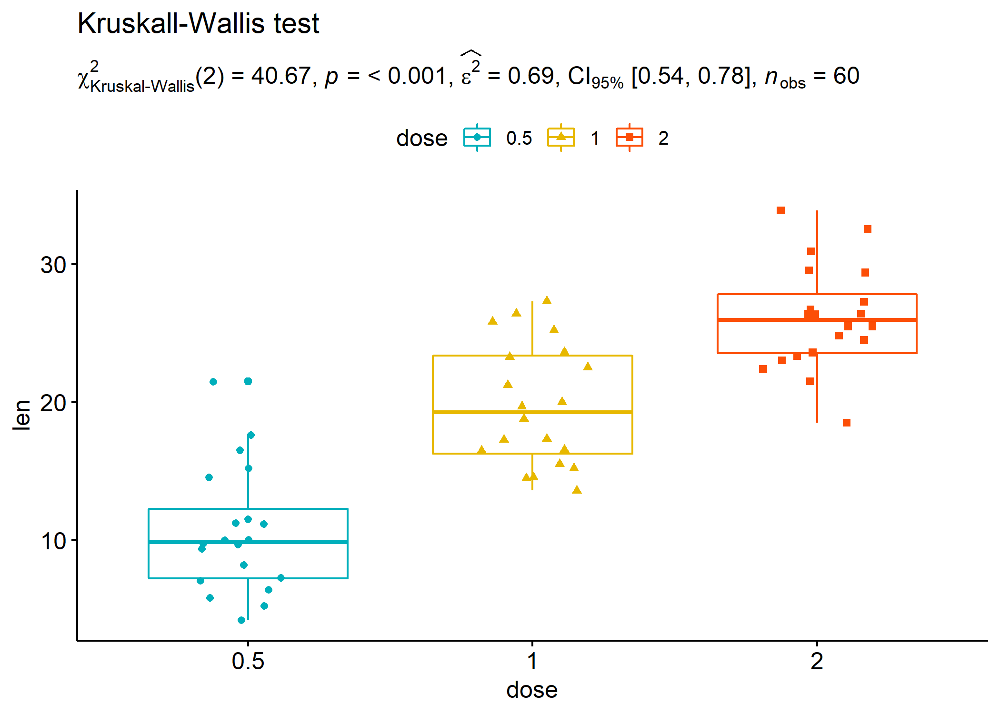
Within-subjects design
Let’s now see an example of a repeated measures one-way ANOVA.
# setup set.seed(123) library(ggplot2) library(WRS2) library(ggbeeswarm) library(statsExpressions) ggplot2::ggplot(WineTasting, aes(Wine, Taste, color = Wine)) + geom_quasirandom() + labs( title = "Friedman's rank sum test", subtitle = expr_anova_nonparametric(WineTasting, Wine, Taste, paired = TRUE, type = "np") ) #> Note: 95% CI for effect size estimate was computed with 100 bootstrap samples.
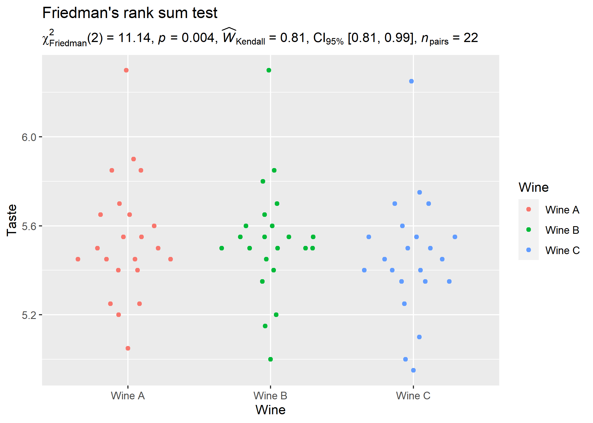
Example: Expressions for two-sample tests
Between-subjects design
# setup set.seed(123) library(ggplot2) library(hrbrthemes) library(statsExpressions) # create a plot ggplot(ToothGrowth, aes(supp, len)) + geom_boxplot() + theme_ipsum_rc() + # adding a subtitle with labs( title = "Two-Sample Welch's t-test", subtitle = expr_t_parametric(ToothGrowth, supp, len) )
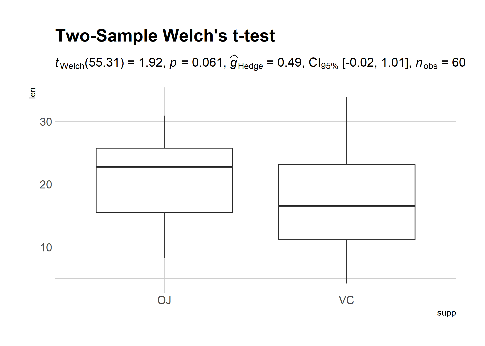
Example with ggpubr:
# setup set.seed(123) library(ggplot2) library(ggpubr) library(statsExpressions) # basic plot gghistogram( data.frame( sex = factor(rep(c("F", "M"), each = 200)), weight = c(rnorm(200, 55), rnorm(200, 58)) ), x = "weight", add = "mean", rug = TRUE, fill = "sex", palette = c("#00AFBB", "#E7B800"), add_density = TRUE ) + # displaying stats results labs( title = "Yuen's two-sample test for trimmed means", subtitle = expr_t_robust( data = data.frame( sex = factor(rep(c("F", "M"), each = 200)), weight = c(rnorm(200, 55), rnorm(200, 58)) ), x = sex, y = weight, type = "robust", messages = FALSE ) )
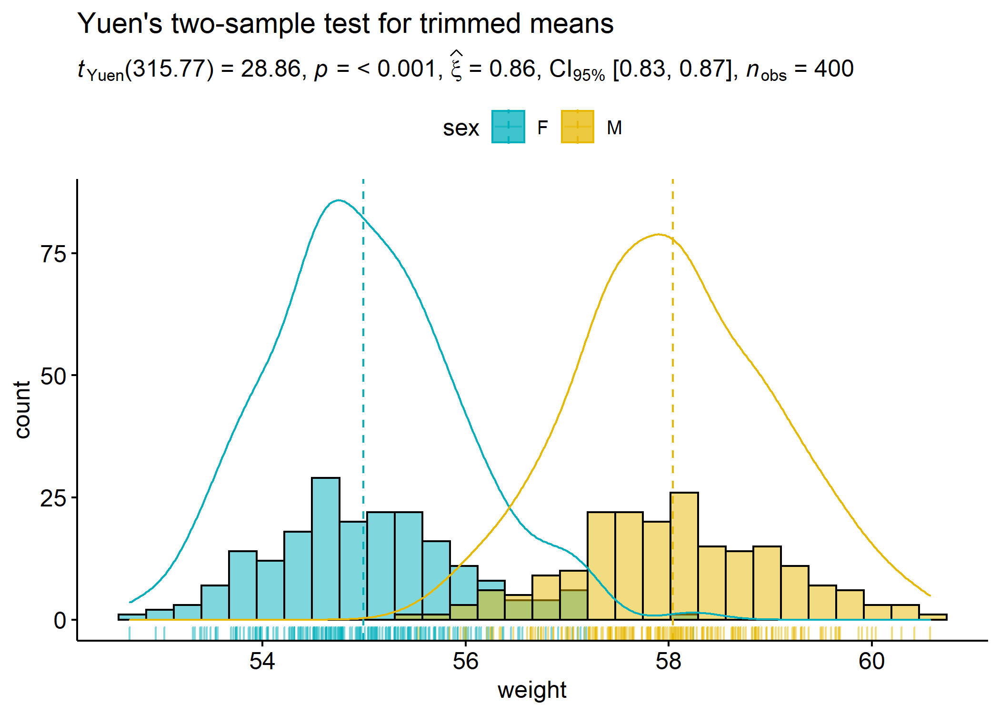
Another example with ggiraphExtra:
# setup set.seed(123) library(ggplot2) library(ggiraphExtra) library(gcookbook) library(statsExpressions) # plot ggDot(heightweight, aes(sex, heightIn, fill = sex), boxfill = "white", binwidth = 0.4 ) + labs( title = "Wilcoxon two-sample test", subtitle = expr_t_nonparametric(heightweight, sex, heightIn, type = "np") ) #> Note: 95% CI for effect size estimate was computed with 100 bootstrap samples.
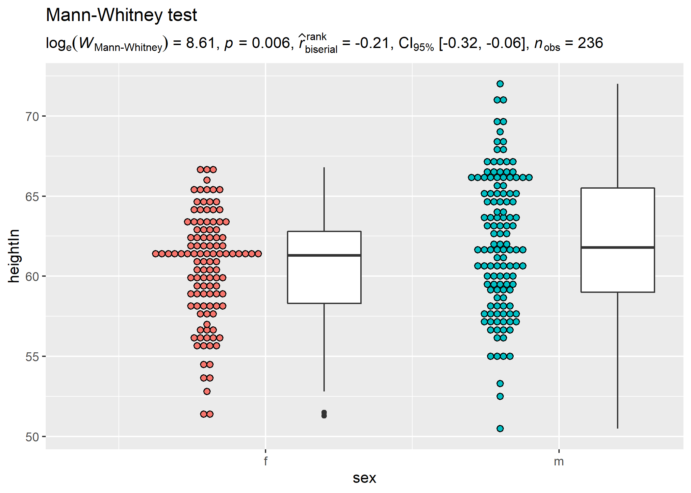
Within-subjects design
We can also have a look at a repeated measures design and the related expressions.
# setup set.seed(123) library(ggplot2) library(statsExpressions) library(tidyr) library(PairedData) data(PrisonStress) # plot paired.plotProfiles(PrisonStress, "PSSbefore", "PSSafter", subjects = "Subject") + # `statsExpressions` needs data in the tidy format labs( title = "Two-sample Wilcoxon paired test", subtitle = expr_t_nonparametric( data = pivot_longer(PrisonStress, starts_with("PSS"), "PSS", values_to = "stress"), x = PSS, y = stress, paired = TRUE, type = "nonparametric" ) ) #> Note: 95% CI for effect size estimate was computed with 100 bootstrap samples.
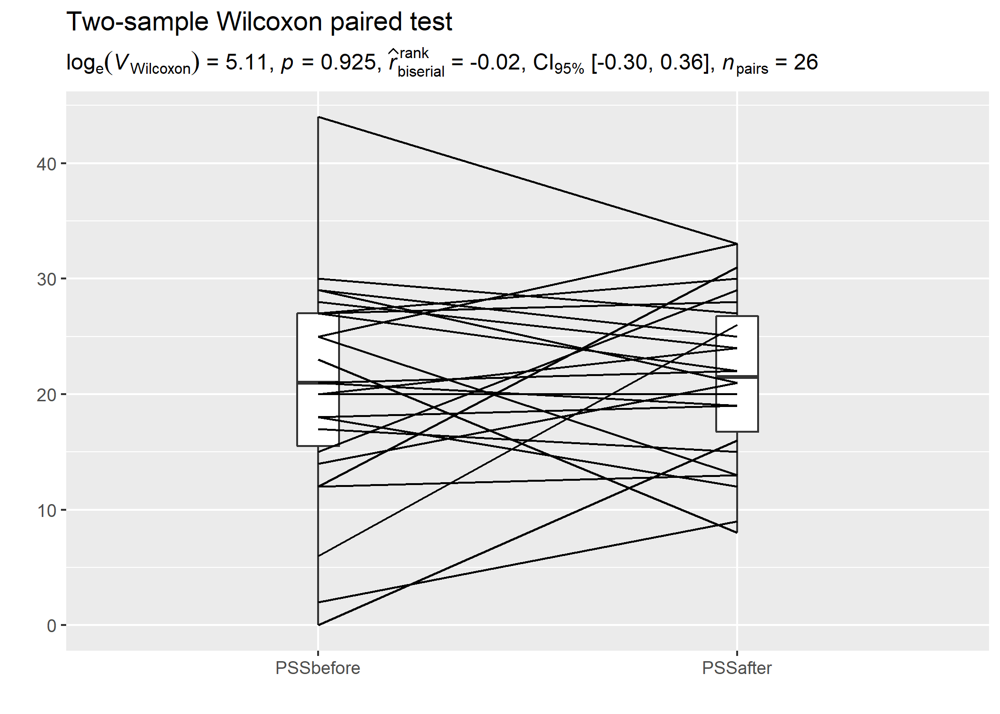
Example: Expressions for one-sample tests
# setup set.seed(123) library(ggplot2) library(statsExpressions) # creating a histogram plot ggplot(mtcars, aes(wt)) + geom_histogram(alpha = 0.5) + geom_vline(xintercept = mean(mtcars$wt), color = "red") + # adding a caption with a non-parametric one-sample test labs( title = "One-Sample Wilcoxon Signed Rank Test", subtitle = expr_t_onesample(mtcars, wt, test.value = 3, type = "nonparametric") ) #> Note: 95% CI for effect size estimate was computed with 100 bootstrap samples.
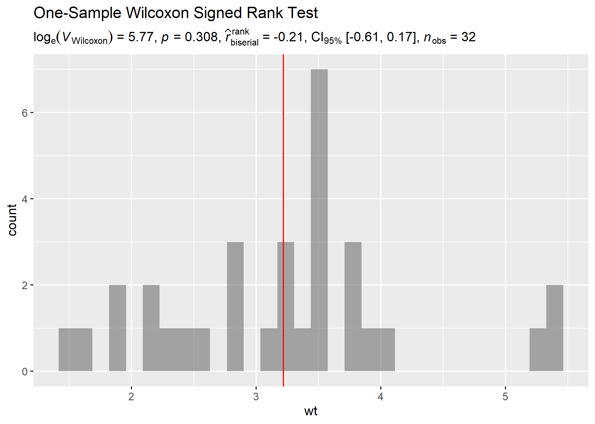
Example: Expressions for correlation analyses
Let’s look at another example where we want to run correlation analysis:
# setup set.seed(123) library(ggplot2) library(statsExpressions) # create a ridgeplot ggplot(mtcars, aes(mpg, wt)) + geom_point() + geom_smooth(method = "lm") + labs( title = "Spearman's rank correlation coefficient", subtitle = expr_corr_test(mtcars, mpg, wt, type = "nonparametric") )
Example: Expressions for contingency table analysis
For categorical/nominal data
# setup set.seed(123) library(ggplot2) library(statsExpressions) # basic pie chart ggplot(as.data.frame(table(mpg$class)), aes(x = "", y = Freq, fill = factor(Var1))) + geom_bar(width = 1, stat = "identity") + theme(axis.line = element_blank()) + # cleaning up the chart and adding results from one-sample proportion test coord_polar(theta = "y", start = 0) + labs( fill = "Class", x = NULL, y = NULL, title = "Pie Chart of class (type of car)", subtitle = expr_onesample_proptest(as.data.frame(table(mpg$class)), Var1, counts = Freq), caption = "One-sample goodness of fit proportion test" ) #> Note: 95% CI for effect size estimate was computed with 100 bootstrap samples.
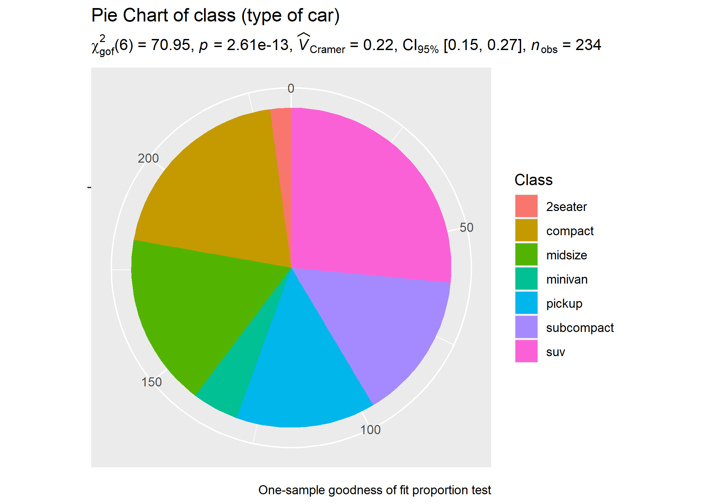
You can also use these function to get the expression in return without having to display them in plots:
# setup set.seed(123) library(ggplot2) library(statsExpressions) # Pearson's chi-squared test of independence expr_contingency_tab(mtcars, am, cyl, messages = FALSE) #> paste(NULL, chi["Pearson"]^2, "(", "2", ") = ", "8.74", ", ", #> italic("p"), " = ", "0.013", ", ", widehat(italic("V"))["Cramer"], #> " = ", "0.46", ", CI"["95%"], " [", "0.08", ", ", "0.75", #> "]", ", ", italic("n")["obs"], " = ", 32L)
Example: Expressions for meta-analysis
# setup set.seed(123) library(metaviz) library(ggplot2) # meta-analysis forest plot with results random-effects meta-analysis viz_forest( x = mozart[, c("d", "se")], study_labels = mozart[, "study_name"], xlab = "Cohen's d", variant = "thick", type = "cumulative" ) + # use `statsExpressions` to create expression containing results labs( title = "Meta-analysis of Pietschnig, Voracek, and Formann (2010) on the Mozart effect", subtitle = expr_meta_parametric(dplyr::rename(mozart, estimate = d, std.error = se)) ) + theme(text = element_text(size = 12))
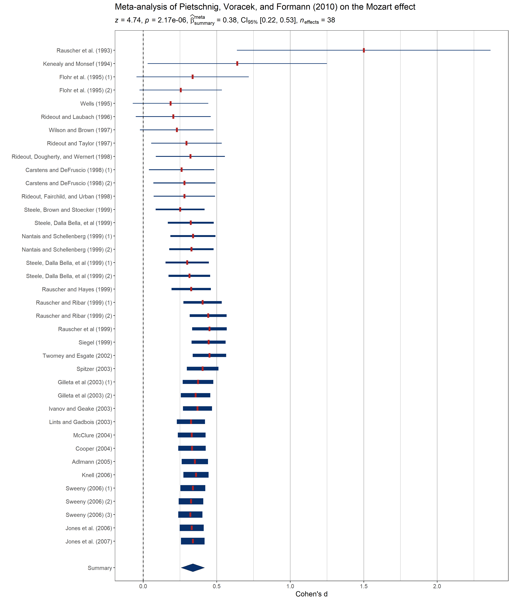